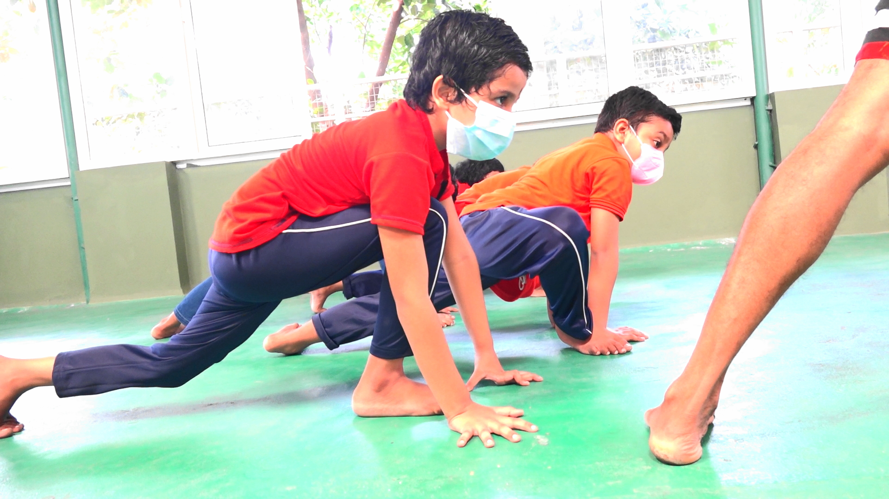
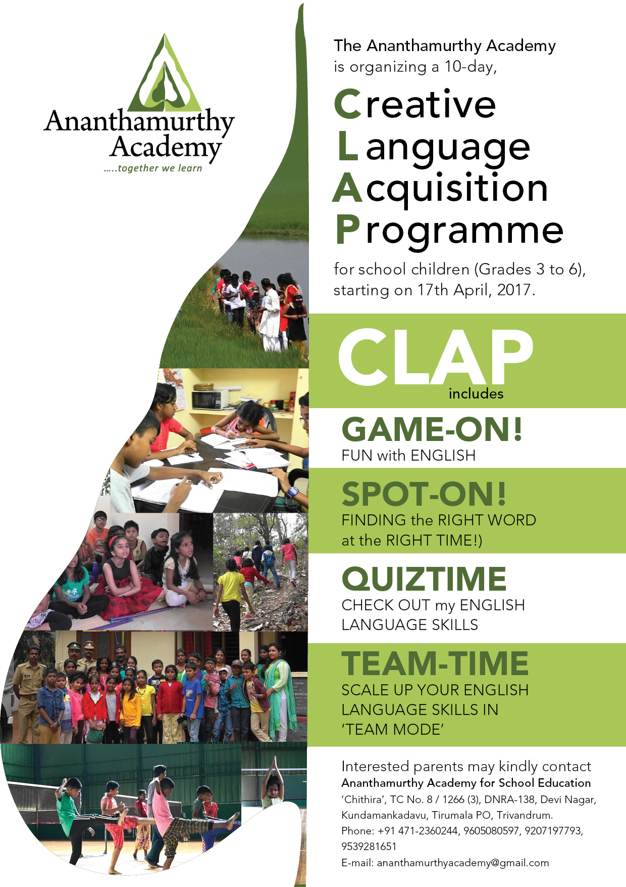

Cambridge Early Years
The Kindergarten section follows the Cambridge International Early Years Programme, with two stages that support children's learning and development.

Traditional Martial Art
Kalarippayattu training is compulsory for every student from Stage 1 onwards. The school describes its aims as developing mental and physical faculties in balance and providing an effective self-defence practice.

Carnatic & Western
Students learn Carnatic classical vocal music and are also exposed to Sopanasangeetham and folk songs. The school also offers Western music instruction.

Cultural Immersion
Keraleeyam integrates Malayalam learning with opportunities to understand and appreciate Kerala's history and cultural heritage, including visits to places and events of cultural and historical importance, such as Padmanabhapuram Palace.
Reference photo, not the school's own — Timothy A. Gonsalves / Wikimedia Commons, CC BY-SA 4.0

School Life
Explore photographs from school events and student activities in the gallery.
View Stories & Photos →